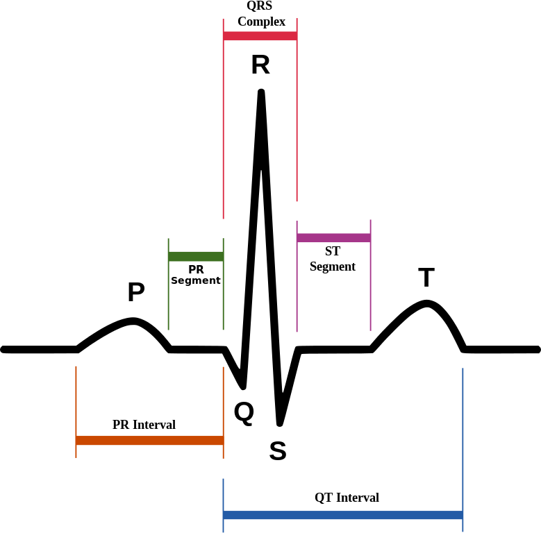

Python, Pharmaceuticals and Drug Discovery
| Authors: | Emlyn Clay |
|---|---|
| Organization: | OpenVivo Ltd. |
| Contact: | emlyn.clay@openvivo.com |
| Date: | 23rd February 2014 |
Pharmaceuticals in the UK
Objectives
- Introduce preclinical-clinical drug discovery
- Demonstrate computational aspects of preclinical-clinical problems
- Make a case for Python and it's scientific stack
Preclinical Drug Discovery
Preclinical testing focuses on
- Testing the drug in cells and mammals
- Efficacy - does the drug work
- Toxicity - does the drug have acceptable adverse effects
- "Dosis Sola Facit Venenum"
- ... "Only the dose determines the poison"
{kind=link}
Pharmaceutical use cases for Python
- Processing and classification of biosignals; ECG, Blood Pressure
- Statistical analysis of clinical datasets
- Documentation according to regulated ontologies
ECG analysis
The case of RPL554
- RPL554, a novel PDE3/4 inhibitor
- Demonstrated hERG blockade
- Inwardly Rectifying Potassium Current (IKr)
- Blockade of IKr prolongs Q-peak to T-peak interval of the ECG
- Prolonged QTc can lead to Torsades de pointes
ECG, the ElectroCardioGram

A single ECG
{kind=link}
The ECG and the cardiac cycle

Analyzing the ECG: Read the data
# imports import vrp, h5py as hdf, numpy as np, scipy as sp # read data in data = hdf.File('ecg_2s.hdf5', 'r') ecg = data.get('gp_ecg') sampling = ecg.attrs.get('sampling_frequency') # smoothing
Analyzing the ECG: Find the R-peak
Scans the signal, when the threshold is met follow until we go under the threshold, quadratically interpolate the peak width and the np.max is the peak.
# parameters minheight = np.percentile(ecg, 0.9) minwidth = sampling * (1 / 0.0015) # R-peak is about 15ms # find R-peak using a translation of findpeak.m findpeaks = vrp.ecg.findpeaks peaks, locs = findpeaks(ecg, minheight, minwidth) beat = zip(peaks, locs)
Analyzing the ECG: Find the Q-peak and T-peak
- With each beat, slice backward to find the local minima, Q-peak
- Slice forward, find the local maxima T-peak
- Least Mean Square (LMS) regression from T-peak to T-end
Analyzing the ECG: Correct the QT for heart rate
- QT increases curvilinearly with heart rate (HR)
- Traditional correction methods approximate to QTc = (QT)/(2√(RR))
- Individual regression of HR for each trial is best
{kind=link}
How does Python help you analyse the ECG?
- No more difficult than MATLAB
- Most commercial ECG analysis tool have poor scripting
- Poor end-to-end workflows
- Breakout of domain specific tools
Statistical analysis of clinical datasets
Clinical datasets
- Larg-ish Set of Records; 200Mb Phase 1, 1Gb Phase 2,
- Shape 8-20 cols by ~30,000 rows
- Pivot on ~100 different axes and report
- abbr Evrywhr
Pivoting Clinical Datasets
- Originally I rolled my own
- Subclass recarray,
- Use np.unique,
- "Stack" the data, a.k.a, build a tree
Now, I use Pandas
Pivoting Clinical Datasets
import pandas as pd df = ... # import data from excel, sql # pivot the whole dataset results = pd.pivot_table(df, cols=['Parameter'], rows=['Subject', 'Activity'], values='Value') # group by, in stages by_subject = df.groupby('subject'); for name, group in by_subject: # calculate parameter, # e.g. regression heart rate vs dose
abbr Evrywhr
- Abbreviations a.k.a Clinical Ontologies
- "Explicit is better than implicit."
- Dictionary map our ontologies to theirs
- __repr__ method to print description
{kind=link}
How does Python help you analyse clinical data?
- Clinical datasets are a little too large for Excel
- Full-fledged programming, REPL and easy syntax
- Limits the sprawl of Excel spreadsheets
- scikits.statsmodels integrates with pandas
Documentation according to regulated ontologies
Converting our documents to Sphinx
- Convert Word to HTML
- Clean HTML elements
- Pandoc to ReST
- Generate a TOC

Sphinx: Rolename
- Regulatory submissions must use the Common Technical Document format
- Rolename per variable of the eCTD
- Build process for submission
{kind=link}
Sphinx: Features for Pharma
- Convert to Latex > PDF, HTML
- Searchable, hyperlinked.
- Rolename to add in regulatory parameters
- Directives to control repetitive macro content
What's holding Python back in Drug Discovery?
Inertia, regulation and having someone to blame
- Culturally slow to change
- Use Office, Use Sharepoint
- Regulated companies want regulated solutions
- Liability and legal conformity
{kind=link}
Possible solutions
- Social engineering
- Target biotech then target Big Pharma
- Python Certified®
- A legal entity to insure the code - PSF? Continuum?
{kind=link}